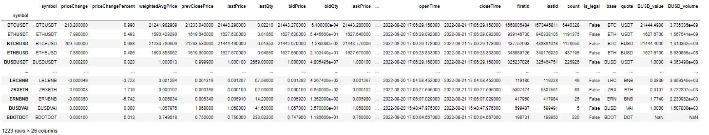

Exchange Info Module¶
This module manages exchange data from the Binance API.
BinPan Classes Main Module
Functions:
Returns general exchange info from /api/v3/exchangeInfo endpoint. |
|
Get the dictionary of each symbol with its information from the exchange. |
|
|
Fetch account status detail. |
|
Get BNB Burn Status (USER_DATA) |
|
Binance manage several limits: RAW_REQUESTS, REQUEST_WEIGHT, and ORDERS rate limits. |
|
It flattens a dict to one level dictionary. |
|
Example: |
|
For a symbol, get exchange filter conditions. |
|
Returns, from BinPan exchange info dictionary currently trading symbols. |
|
Returns, from BinPan exchange info dictionary currently SPOT symbols. |
|
Returns, from BinPan exchange info dictionary currently MARGIN symbols. |
|
Returns, from BinPan exchange info dictionary currently NOT MARGIN symbols. |
|
Returns, from BinPan exchange info dictionary currently NOT LEVERAGED symbols. |
|
Returns, from BinPan exchange info dictionary currently trading symbols not using legal Fiat money. |
|
Gets a dictionary with decimal positions each symbol. |
|
Gets a dictionary with a list of order types suppoerted each symbol. |
|
Returns fees for a symbol or for every symbol if not passed a symbol. |
|
Returns fees for a symbol or for every symbol if not passed. |
Fetch system status. |
|
|
Get information of coins (available for deposit and withdraw) for user. |
|
Bring all coins exchange info in a list if no one is specified. |
|
Useful managing coins info in a big dictionary with coins as keys. |
|
Fetch coins containing isLegalMoney=true |
|
Search for Binance leveraged coins by searching UP or DOWN before an existing coin, examples: |
|
Search for Binance symbols based on leveraged coins by searching UP or DOWN before an existing coin in symbol, leveraged coins examples are: |
|
Get quote coin each symbol. |
|
Get base coin each symbol. |
|
It returns a lot of results: bases_dic, quotes_dic, legal_coins, not_legal_pairs, symbol_filters, filtered_pairs |
|
GET /api/v3/ticker/24hr |
|
Converts any coin quantity value to a reference coin. |
|
Convert value of a quantity of coins to value in other coin.It tries to convert to a reference coin but if that symbol is not found, it tries to convert to BTC, BUSD, BNB, ETH, TUSD, USDC. |
|
Convert value of a quantity of coins to value in other coin. |
Converts a series of symbols to a series of stable coin converted prices. |
|
Converts milliseconds timestamp to formatted string. |
|
|
Generates a dataframe with the filters to apply with the statistics of the last 24 hours. |
|
Generates a dataframe for symbols against a quote with the filters to apply with the statistics of the last 24 hours. |
Count decimal positions for a value, correctly handling floats and Decimal numbers, including those in scientific notation. |
- get_exchange_info() dict[source]¶
Returns general exchange info from /api/v3/exchangeInfo endpoint.
- Return dict:
dict_keys([‘timezone’, ‘serverTime’, ‘rateLimits’, ‘exchangeFilters’, ‘symbols’])
Example:
{ "timezone": "UTC", "serverTime": 1565246363776, "rateLimits": [ { //These are defined in the `ENUM definitions` section under `Rate Limiters (rateLimitType)`. //All limits are optional } ], "exchangeFilters": [ //These are the defined filters in the `Filters` section. //All filters are optional. ], "symbols": [ { "symbol": "ETHBTC", "status": "TRADING", "baseAsset": "ETH", "baseAssetPrecision": 8, "quoteAsset": "BTC", "quotePrecision": 8, "quoteAssetPrecision": 8, "orderTypes": [ "LIMIT", "LIMIT_MAKER", "MARKET", "STOP_LOSS", "STOP_LOSS_LIMIT", "TAKE_PROFIT", "TAKE_PROFIT_LIMIT" ], "icebergAllowed": true, "ocoAllowed": true, "quoteOrderQtyMarketAllowed": true, "allowTrailingStop": false, "cancelReplaceAllowed": false, "isSpotTradingAllowed": true, "isMarginTradingAllowed": true, "filters": [ //These are defined in the Filters section. //All filters are optional ], "permissions": [ "SPOT", "MARGIN" ] } ] }
- get_info_dic() dict[source]¶
Get the dictionary of each symbol with its information from the exchange.
- Return dict:
Returns info for each symbol as keys in the dict.
Example:
from binpan.api import exchange_info info_dic = exchange_info.get_info_dic() info_dic['ETHUSDT'] {'symbol': 'ETHUSDT', 'status': 'TRADING', 'baseAsset': 'ETH', 'baseAssetPrecision': 8, 'quoteAsset': 'USDT', 'quotePrecision': 8, 'quoteAssetPrecision': 8, 'baseCommissionPrecision': 8, 'quoteCommissionPrecision': 8, 'orderTypes': ['LIMIT', 'LIMIT_MAKER', 'MARKET', 'STOP_LOSS_LIMIT', 'TAKE_PROFIT_LIMIT'], 'icebergAllowed': True, 'ocoAllowed': True, 'quoteOrderQtyMarketAllowed': True, 'allowTrailingStop': True, 'cancelReplaceAllowed': True, 'isSpotTradingAllowed': True, 'isMarginTradingAllowed': True, 'filters': [{'filterType': 'PRICE_FILTER', 'minPrice': '0.01000000', 'maxPrice': '1000000.00000000', 'tickSize': '0.01000000'}, {'filterType': 'PERCENT_PRICE', 'multiplierUp': '5', 'multiplierDown': '0.2', 'avgPriceMins': 5}, {'filterType': 'LOT_SIZE', 'minQty': '0.00010000', 'maxQty': '9000.00000000', 'stepSize': '0.00010000'}, {'filterType': 'MIN_NOTIONAL', 'minNotional': '10.00000000', 'applyToMarket': True, 'avgPriceMins': 5}, {'filterType': 'ICEBERG_PARTS', 'limit': 10}, {'filterType': 'MARKET_LOT_SIZE', 'minQty': '0.00000000', 'maxQty': '6175.01628506', 'stepSize': '0.00000000'}, {'filterType': 'TRAILING_DELTA', 'minTrailingAboveDelta': 10, 'maxTrailingAboveDelta': 2000, 'minTrailingBelowDelta': 10, 'maxTrailingBelowDelta': 2000}, {'filterType': 'MAX_NUM_ORDERS', 'maxNumOrders': 200}, {'filterType': 'MAX_NUM_ALGO_ORDERS', 'maxNumAlgoOrders': 5}], 'permissions': ['SPOT', 'MARGIN', 'TRD_GRP_004']}
- get_account_status(decimal_mode: bool) dict[source]¶
Fetch account status detail.
For Machine Learning limits, restrictions will be applied to account. If a user has been restricted by the ML system, they may check the reason and the duration by using the [/sapi/v1/account/status] endpoint
- Return dict:
Example:
{ "data": "Normal" }
- get_margin_bnb_interest_status(decimal_mode: bool) dict[source]¶
Get BNB Burn Status (USER_DATA)
GET /sapi/v1/bnbBurn (HMAC SHA256)
Weight(IP): 1
- Return dict:
Example
{ "spotBNBBurn":true, "interestBNBBurn": false }
- get_exchange_limits(info_dict: dict = None) dict[source]¶
Binance manage several limits: RAW_REQUESTS, REQUEST_WEIGHT, and ORDERS rate limits.
The headers for those limits, I assume that are: - RAW_REQUESTS: x-mbx-used-weight. Is cross all the api calls. - REQUEST_WEIGHT: Example: x-mbx-order-count-10s. Time interval limited requests. - ORDERS: Example: x-mbx-order-count-10s. Rate limit for orders. - X-SAPI-USED-IP-WEIGHT-1M: For sapi endpoint requests.
Example response:
{'x-mbx-used-weight-1m': 1200, 'X-SAPI-USED-IP-WEIGHT-1M': 1200, 'X-SAPI-USED-UID-WEIGHT-1M': 1200, 'x-mbx-order-count-10s': 50, 'x-mbx-order-count-1d': 160000, 'x-mbx-used-weight': 6100}
- Return dict:
- flatten_filter(filters: list) dict[source]¶
It flattens a dict to one level dictionary.
- Parameters:
filters (list) – A dict with API filter data.
- Return dict:
A one level flattened dict with keys expanded with original sub-dicts.
- get_symbols_filters(info_dic: dict = None) dict[source]¶
Example:
exchange.get_filters('TLMBUSD', info_dic=info_dic) {'TLMBUSD': {'PRICE_FILTER_minPrice': '0.00001000', 'PRICE_FILTER_maxPrice': '1000.00000000', 'PRICE_FILTER_tickSize': '0.00001000', 'PERCENT_PRICE_multiplierUp': '5', 'PERCENT_PRICE_multiplierDown': '0.2', 'PERCENT_PRICE_avgPriceMins': 5, 'LOT_SIZE_minQty': '1.00000000', 'LOT_SIZE_maxQty': '900000.00000000', 'LOT_SIZE_stepSize': '1.00000000', 'MIN_NOTIONAL_minNotional': '10.00000000', 'MIN_NOTIONAL_applyToMarket': True, 'MIN_NOTIONAL_avgPriceMins': 5, 'ICEBERG_PARTS_limit': 10, 'MARKET_LOT_SIZE_minQty': '0.00000000', 'MARKET_LOT_SIZE_maxQty': '1181959.38584316', 'MARKET_LOT_SIZE_stepSize': '0.00000000', 'TRAILING_DELTA_minTrailingAboveDelta': 10, 'TRAILING_DELTA_maxTrailingAboveDelta': 2000, 'TRAILING_DELTA_minTrailingBelowDelta': 10, 'TRAILING_DELTA_maxTrailingBelowDelta': 2000, 'MAX_NUM_ORDERS_maxNumOrders': 200, 'MAX_NUM_ALGO_ORDERS_maxNumAlgoOrders': 5}}
- Parameters:
info_dic (dict) – A BinPan exchange info dictionary
- Return dict:
A dict with all flatten values.
- get_filters(symbol: str, info_dic: dict = None) dict[source]¶
For a symbol, get exchange filter conditions.
- Parameters:
- Return a dict:
A dictionary with exclusively data for a symbol.
Example:
from binpan.api import exchange_info filters = exchange_info.get_filters('ETHBTC') filters {'ETHBTC': {'PRICE_FILTER_minPrice': '0.00000100', 'PRICE_FILTER_maxPrice': '922327.00000000', 'PRICE_FILTER_tickSize': '0.00000100', 'PERCENT_PRICE_multiplierUp': '5', 'PERCENT_PRICE_multiplierDown': '0.2', 'PERCENT_PRICE_avgPriceMins': 5, 'LOT_SIZE_minQty': '0.00010000', 'LOT_SIZE_maxQty': '100000.00000000', 'LOT_SIZE_stepSize': '0.00010000', 'MIN_NOTIONAL_minNotional': '0.00010000', 'MIN_NOTIONAL_applyToMarket': True, 'MIN_NOTIONAL_avgPriceMins': 5, 'ICEBERG_PARTS_limit': 10, 'MARKET_LOT_SIZE_minQty': '0.00000000', 'MARKET_LOT_SIZE_maxQty': '1135.26522780', 'MARKET_LOT_SIZE_stepSize': '0.00000000', 'TRAILING_DELTA_minTrailingAboveDelta': 10, 'TRAILING_DELTA_maxTrailingAboveDelta': 2000, 'TRAILING_DELTA_minTrailingBelowDelta': 10, 'TRAILING_DELTA_maxTrailingBelowDelta': 2000, 'MAX_NUM_ORDERS_maxNumOrders': 200, 'MAX_NUM_ALGO_ORDERS_maxNumAlgoOrders': 5}}
- filter_tradeable(info_dic: dict) dict[source]¶
Returns, from BinPan exchange info dictionary currently trading symbols.
- Parameters:
info_dic (dict) – BinPan exchange info dictionary. It’s optional to avoid an API call.
- Return dict:
BinPan exchange info dictionary, but, just with currently trading symbols.
- filter_spot(info_dic: dict) dict[source]¶
Returns, from BinPan exchange info dictionary currently SPOT symbols.
- Parameters:
info_dic (dict) – BinPan exchange info dictionary. It’s optional to avoid an API call.
- Return dict:
BinPan exchange info dictionary, but, just with currently SPOT symbols.
- filter_margin(info_dic: dict) dict[source]¶
Returns, from BinPan exchange info dictionary currently MARGIN symbols.
- Parameters:
info_dic (dict) – BinPan exchange info dictionary. It’s optional to avoid an API call.
- Return dict:
BinPan exchange info dictionary, but, just with currently MARGIN symbols.
- filter_not_margin(symbols: list = None, info_dic: dict = None) list[source]¶
Returns, from BinPan exchange info dictionary currently NOT MARGIN symbols.
- filter_leveraged_tokens(info_dic: dict) dict[source]¶
Returns, from BinPan exchange info dictionary currently NOT LEVERAGED symbols.
- Parameters:
info_dic (dict) – BinPan exchange info dictionary. It’s optional to avoid an API call.
- Return dict:
BinPan exchange info dictionary, but, just with currently NOT LEVERAGED symbols.
- filter_legal(legal_coins: list, info_dic: dict) dict[source]¶
Returns, from BinPan exchange info dictionary currently trading symbols not using legal Fiat money.
- get_precision(info_dic: dict = None) dict[source]¶
Gets a dictionary with decimal positions each symbol. :param dict info_dic: BinPan exchange info dictionary. It’s optional to avoid an API call. :return dict: dictionary with decimal positions each symbol.
- get_orderTypes_and_permissions(info_dic: dict = None) dict[source]¶
Gets a dictionary with a list of order types suppoerted each symbol. :param dict info_dic: BinPan exchange info dictionary. It’s optional to avoid an API call. :return dict: dictionary with a list of order types suppoerted each symbol.
- get_fees_dict(decimal_mode: bool, symbol: str = None) dict[source]¶
Returns fees for a symbol or for every symbol if not passed a symbol.
- Parameters:
symbol (str) – Optional to request just one symbol instead of all. :param bool decimal_mode: Fixes Decimal return type.
- Return dict:
A dict with maker and taker fees.
- get_fees(decimal_mode: bool, symbol: str = None) DataFrame[source]¶
Returns fees for a symbol or for every symbol if not passed.
- Parameters:
decimal_mode (bool) – Fixes Decimal return type and operative. :param str symbol: Optional to request just one symbol instead of all.
- Return pd.DataFrame:
A pandas dataframe with all the fees applied each symbol.
- get_system_status()[source]¶
Fetch system status.
Weight(IP): 1
- Return dict:
As shown in example.
Example:
{ "status": 0, // 0: normal，1：system maintenance "msg": "normal" // "normal", "system_maintenance" }
- get_coins_and_networks_info(decimal_mode: bool) tuple[source]¶
Get information of coins (available for deposit and withdraw) for user.
GET /sapi/v1/capital/config/getall (HMAC SHA256)
Weight(IP): 10
- Return pd.DataFrame, pd.DataFrame:
- get_coins_info_list(decimal_mode: bool, coin: str = None) list[source]¶
Bring all coins exchange info in a list if no one is specified.
Returns a list of dictionaries, one for each currency.
- Parameters:
decimal_mode (bool) – Fixes Decimal return type and operative. :param str coin: Limit response to a coin.
- Return list:
A list of dictionaries each coin.
- get_coins_info_dic(decimal_mode: bool, coin: str = None) dict[source]¶
Useful managing coins info in a big dictionary with coins as keys.
- Parameters:
decimal_mode (bool) – Fixes Decimal return type and operative. :param str coin: Limit response to a coin.
- Return list:
A dictionary with each coin data as value.
- get_legal_coins(decimal_mode: bool, coins_dic: dict = None) list[source]¶
Fetch coins containing isLegalMoney=true
- Parameters:
decimal_mode (bool) – Fixes Decimal return type and operative. :param dict coins_dic: Avoid fetching the API by passing a dict with coins data.
- Return list:
A list with coins names.
- get_leveraged_coins(decimal_mode: bool, coins_dic: dict = None) list[source]¶
Search for Binance leveraged coins by searching UP or DOWN before an existing coin, examples:
['1INCHDOWN', '1INCHUP', 'AAVEDOWN', 'AAVEUP', 'ADADOWN', ... ]- Parameters:
decimal_mode (bool) – Fixes Decimal return type and operative. :param dict coins_dic: Avoid fetching the API by passing a dict with coins data.
- Return list:
A list with leveraged coins names.
- get_leveraged_symbols(decimal_mode: bool, info_dic: dict = None, leveraged_coins: list = None) list[source]¶
Search for Binance symbols based on leveraged coins by searching UP or DOWN before an existing coin in symbol, leveraged coins examples are:
# leveraged coins ['1INCHDOWN', '1INCHUP', 'AAVEDOWN', 'AAVEUP', 'ADADOWN', ... ] # leveraged symbols
- Parameters:
- Return list:
A list with leveraged coins names.
- get_quotes_dic(info_dic: dict = None) dict[source]¶
Get quote coin each symbol.
- Parameters:
info_dic (dict) – BinPan exchange info dictionary. It’s optional to avoid an API call.
- Return dictionary:
It gets symbols as keys and quote coin as values.
- get_bases_dic(info_dic: dict = None) dict[source]¶
Get base coin each symbol.
- Parameters:
info_dic (dict) – BinPan exchange info dictionary. It’s optional to avoid an API call.
info_dic
- Return dictionary:
It gets symbols as keys and base coin as values.
- Returns:
- exchange_status(decimal_mode: bool, tradeable=True, spot_required=True, margin_required=True, drop_legal=True, filter_leveraged=True, info_dic: dict = None, symbol_filters: dict = None) tuple[source]¶
It returns a lot of results: bases_dic, quotes_dic, legal_coins, not_legal_pairs, symbol_filters, filtered_pairs
- Parameters:
decimal_mode (bool) – Fixes Decimal return type and operative. :param bool tradeable: Require or not just currently trading symbols.
spot_required (bool) – Requires just SPOT currently trading symbols.
margin_required (bool) – Requires just MARGIN currently trading symbols.
drop_legal (bool) – Drops symbols with legal coins.
filter_leveraged (bool) – Drops symbols with leveraged coins.
info_dic (dict) – BinPan exchange info dictionary. It’s optional to avoid an API call.
symbol_filters (dict) – A BinPan symbols filters dict.
- Return tuple:
bases_dic, quotes_dic, legal_coins, not_legal_pairs, symbol_filters, filtered_pairs
- get_24h_statistics(symbol: str = None) dict[source]¶
GET /api/v3/ticker/24hr
24 hour rolling window price change statistics. Careful when accessing this with no symbol.
Weight(IP):
Symbols requested weight:
1-20: 1
21-100: 20
101 or more: 40
If symbols parameter is omitted 40
- Parameters:
symbol (str) – Optional symbol.
- Return dict:
As example shown.
Example:
{ "symbol": "BNBBTC", "priceChange": "-94.99999800", "priceChangePercent": "-95.960", "weightedAvgPrice": "0.29628482", "prevClosePrice": "0.10002000", "lastPrice": "4.00000200", "lastQty": "200.00000000", "bidPrice": "4.00000000", "bidQty": "100.00000000", "askPrice": "4.00000200", "askQty": "100.00000000", "openPrice": "99.00000000", "highPrice": "100.00000000", "lowPrice": "0.10000000", "volume": "8913.30000000", "quoteVolume": "15.30000000", "openTime": 1499783499040, "closeTime": 1499869899040, "firstId": 28385, // First tradeId "lastId": 28460, // Last tradeId "count": 76 // Trade count }
- try_coin_conversion_to_stablecoin_by_intermediate_symbol(coin: str, coin_qty: float = 1, prices: dict = None, coin_to_check_with_stablecoin: str = 'BTC', stablecoin: str = 'USDT', decimal_mode: bool = None) float | None[source]¶
Converts any coin quantity value to a reference coin. I tries to build a symbol name from coin and coin_to_check_with_usdt and then checks if it’s in prices dict. If not, it tries to build a symbol name from coin_to_check_with_usdt and coin (reversed) and then checks if it’s in prices dict. Else it returns None.
When it finds a symbol intermediate, it uses it to convert to stablecoin.
- Parameters:
coin (str) – A coin to convert to other coin value.
coin_qty (float) – A quantity of the coin selected to use in calculation. Default is 1.
prices (dict) – Current prices of all symbols. Default is None. If None, it will be fetched.
coin_to_check_with_stablecoin (str) – Intermediate coin to check with a stable coin. Default is USDT.
stablecoin (str) – A Binance existing coin to convert to. Default is USDT.
decimal_mode (bool) – Fixes Decimal return type and operative. Default is False.
- Return float:
Converted value result by multiplying coin_qty by the intermediate coin price and then by the USDT price. If not found, returns None.
- convert_to_other_coin(coin: str, decimal_mode: bool = False, convert_to: str = 'USDT', coin_qty: float = 1, prices: dict = None) float[source]¶
Convert value of a quantity of coins to value in other coin.It tries to convert to a reference coin but if that symbol is not found, it tries to convert to BTC, BUSD, BNB, ETH, TUSD, USDC.
- Parameters:
decimal_mode (bool) – Fixes Decimal return type and operative.
coin (str) – Your coin.
convert_to (str) – A Binance existing coin to convert to. Default is USDT.
coin_qty (float) – A quantity. Default is 1.
prices (dict) – A dict with all current prices. Default is None. Where None, it will be fetched.
- Return float:
Value of the quantity expressed in the converted coin.
- convert_symbol_base_to_other_coin(symbol_to_convert_base: str, base_qty: float = 1, convert_to: str = 'USDT', prices: dict = None, info_dic: dict = None, decimal_mode: bool = False) float | Decimal[source]¶
Convert value of a quantity of coins to value in other coin. It tries to convert to a reference coin but if that symbol is not found, it tries to convert to BTC, BUSD, BNB, ETH, TUSD, USDC.
- Parameters:
decimal_mode (bool) – Fixes Decimal return type and operative.
symbol_to_convert_base (str) – A symbol to get it’s base to convert to other coin value.
base_qty (float) – A quantity. Default is 1.
convert_to (str) – A Binance existing coin. Default is USDT.
prices (dict) – A dict with all current prices. Default is None. Where None, it will be fetched.
info_dic (dict) – BinPan exchange info dictionary. It’s optional to avoid an API call. Default is None.
- Return float:
Value expressed in the converted coin.
- convert_symbol_base_price_series_to_stablecoin(symbol_close_series: Series, stable_coin_symbol_series: Series, symbol_to_convert_base: str = None, stable_symbol: str = None, quotes: dict = None, bases: dict = None) Series[source]¶
Converts a series of symbols to a series of stable coin converted prices. It asumes that the index of the symbol_close_series is included in the index of the stable_coin_series.
The stable_coin_series is supposed to use stablecoin as quote.
- Parameters:
symbol_close_series (pd.Series) – A series with the close prices of a symbol.
stable_coin_symbol_series (pd.Series) – A series with the close prices of an intermediate coin and stable coin as quote.
symbol_to_convert_base (str) – A symbol to convert to stable coin value. Default is None. Example: ‘ETHBTC’.
stable_symbol (str) – A symbol to convert to stable coin value. Default is None. Example: ‘ETHUSDT’.
quotes (dict) – A dictionary with quotes. Default is None. Optional to avoid an API call. Or
bases (dict) – A dictionary with bases. Default is None. Optional to avoid an API call.
- Return pd.Series:
A series with the converted prices from symbol as base and stable coin as quote.
- convert_utc_milliseconds(ms: int) str[source]¶
Converts milliseconds timestamp to formatted string.
- Parameters:
ms (int) – Milliseconds linux timestamp from epoch.
- Return str:
Formatted date.
- statistics_24h(decimal_mode: bool, tradeable=True, spot_required=True, margin_required=False, drop_legal=True, filter_leveraged=True, info_dic=None, stablecoin_value='BUSD', sort_by: str = 'priceChangePercent') DataFrame[source]¶
Generates a dataframe with the filters to apply with the statistics of the last 24 hours. Optionally, you can generate the column to convert the volume to USDT.
- Parameters:
decimal_mode (bool) – Fixes Decimal return type and operative. :param bool tradeable: Require or not just currently trading symbols.
spot_required (bool) – Requires just SPOT currently trading symbols.
margin_required (bool) – Requires just MARGIN currently trading symbols.
drop_legal (bool) – Drops symbols with legal coins.
filter_leveraged (bool) – Drops symbols with leveraged coins.
info_dic (dict) – BinPan exchange info dictionary. It’s optional to avoid an API call.
stablecoin_value – StableCoin reference for value.
sort_by (str) – A column to sort by. Default is ‘priceChangePercent’.
- Return pd.DataFrame:
Picture result.

{kind=link}
- get_top_gainers(decimal_mode: bool, info_dic: dict = None, tradeable=True, spot_required=True, margin_required=False, drop_legal=True, filter_leveraged=True, top_gainers_qty: int = None, my_quote: str = 'BUSD', drop_stable_pairs: bool = True, sort_by_column: str = 'priceChangePercent', full_return: bool = False) DataFrame[source]¶
Generates a dataframe for symbols against a quote with the filters to apply with the statistics of the last 24 hours. Optionally, you can generate the column to convert the volume to USDT.
- Parameters:
decimal_mode (bool) – Fixes Decimal return type and operative. :param bool tradeable: Require or not just currently trading symbols.
spot_required (bool) – Requires just SPOT currently trading symbols.
margin_required (bool) – Requires just MARGIN currently trading symbols.
drop_legal (bool) – Drops symbols with legal coins.
filter_leveraged (bool) – Drops symbols with leveraged coins.
info_dic (dict) – BinPan exchange info dictionary. It’s optional to avoid an API call.
top_gainers_qty – Limit result top lines.
my_quote (str) – A quote coin to reference values.
drop_stable_pairs (bool) – It drop stablecoin to stablecoin symbols.
sort_by_column (str) – A column to sort by. Default is ‘priceChangePercent’.
full_return – Activate return full columns data from exchange, else, returns just a few basic columns.
- Return pd.DataFrame:
A dataframe as in the example .
Example:
from binpan.api.exchange_info import get_top_gainers get_top_gainers(decimal_mode=False) priceChangePercent volume BUSD_value BUSD_volume symbol PHABTC 198.477 9.291796e+07 0.33650 3.126689e+07 PHAUSDT 195.961 6.729636e+08 0.33650 2.264522e+08 PHABUSD 195.530 1.082033e+09 0.33650 3.641039e+08 LTOBTC 61.732 5.854178e+07 0.11070 6.480575e+06 LTOUSDT 60.637 2.813419e+08 0.11070 3.114455e+07 ... ... ... ... ... MDXBTC -21.195 4.096356e+07 0.15640 6.406700e+06 MDXBUSD -22.112 3.444397e+08 0.15640 5.387037e+07 MDXUSDT -22.123 2.896132e+08 0.15640 4.529550e+07 AGIXBTC -23.007 1.086561e+08 0.06489 7.050693e+06 AGIXBUSD -23.407 2.188445e+08 0.06489 1.420082e+07 1194 rows × 4 columns